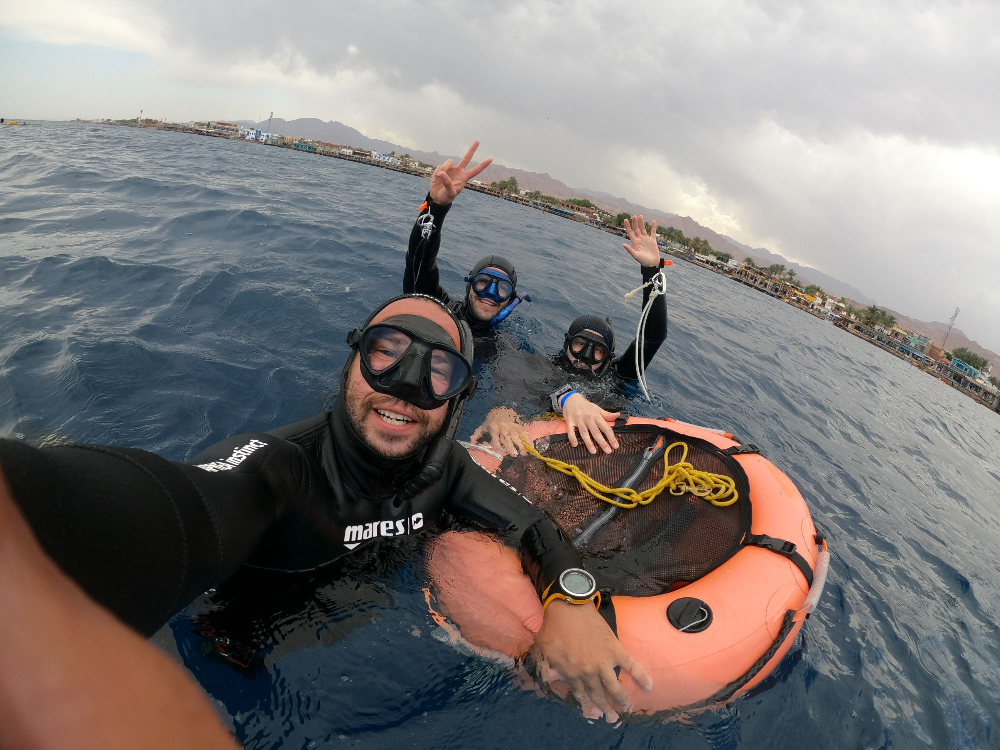

Barcelona is one of the most unusual cities in the world for freediving. It is a major European capital — art, architecture, restaurants, nightlife — and it is also, genuinely, a short metro ride from the Mediterranean Sea. The water is warm, the depths are accessible from the shore, and the visibility in the right season makes you feel like you are floating in tinted glass.
If you are planning your first freediving course here, or considering coming to Barcelona specifically for freediving, here is everything that matters before you arrive.
Where training happens
The pool — theory and technique
All Freediving Brain courses start in the pool. Pool sessions are where you learn breath-hold technique without the variables of open water — no current, no depth pressure, no surge. This is where CO₂ tolerance training begins, where static breath-holds happen, and where you build the movement patterns that carry you into the sea.
Barcelona has excellent indoor pool facilities, and we use venues accessible by public transport from anywhere in the city. You do not need a car.
The sea — open water dives (AIDA 2 and above)
For AIDA 2, AIDA 3, and AIDA 4, open water sessions take place at sites along the Barcelona and Garraf coast. We set a buoy in locations with sandy bottoms, good visibility, and depth profiles appropriate for the certification level — typically starting at 10–20 metres for AIDA 2. The sites are chosen for calm conditions and easy access, usually by boat or a short swim from shore.
Water temperature
16°C – 27°C
Cold in winter, warm June–October. A 5mm wetsuit covers all seasons.
Visibility
5 – 15 metres
Best in summer and early autumn after stable weather periods.
Distance from city
20 – 45 min
By metro, bus, or short drive south along the coast.
Best season
May – October
Warmest water, most stable conditions, longest daylight.
What the Mediterranean is actually like
The Mediterranean is not like the Red Sea, and it is not like the Atlantic. It sits somewhere between them — warmer than the Atlantic, cooler than the tropics, with moderate visibility and a slow, rhythmic energy that suits freediving well. There is almost no tidal movement, which means conditions in the coves and bays where we dive are often genuinely calm even when there is a breeze at the surface.
The marine life at the depths we dive in AIDA courses — 10 to 30 metres — includes sea bass, octopus, various bream species, and occasional encounters with larger pelagics depending on the season. Nothing dangerous, and nothing that will compete with the experience of descending in silence and feeling your body change at depth.
The colour of the water changes as you go deeper. From the surface, the Mediterranean reads blue-green. At 10 metres it deepens to a steady cool blue. At 20 metres the light is dim and diffused, the noise of the surface completely absent. This is where most people understand, for the first time, what freediving actually offers.

Open water sessions with Abdelrahman — small groups, personal attention on every dive
The best time of year to come
The freediving season in Barcelona runs year-round, but the best conditions for open water courses are May through October. Water temperature peaks at around 26–27°C in August and September. Visibility is often best in late summer after a period of stable weather and minimal rain. Spring (May–June) offers cooler water but excellent clarity and comfortable air temperatures.
Winter courses (November–March) run in the pool and are fully viable for AIDA 1. For AIDA 2 and above in winter, we use a 5mm wetsuit and target the calmer days — it is possible and some students prefer the quieter sea. But if you have a choice of season, summer and autumn give you the best open water experience.
What to bring
Freediving Brain provides all equipment — fins, mask, snorkel, weight belt, wetsuit. You do not need to own anything. Bring a swimsuit, a towel, and sun protection. If you have your own fins or wetsuit, you are welcome to use them — just let us know in advance so we can confirm compatibility with the course format.
For the pool day, bring water and a light snack. For open water days, bring water, sun protection, and something warm to wear between dives. Even in summer, sitting on a boat or at the shore between sessions with wet skin can leave you colder than you expect.
Language
All Freediving Brain courses are taught in English. Theory sessions, safety briefings, and in-water feedback are all in English. If you speak Spanish or Arabic, Abdelrahman also teaches in both — but English is the course default and all materials are in English.
What sets Freediving Brain apart in Barcelona
There are freediving options in Barcelona. What makes Freediving Brain different is the methodology and the group size. Every course is taught by Abdelrahman Shebl — AIDA Instructor Trainer, five years in Dahab on the Red Sea before Barcelona — and every course runs with a small group. Not eight people to one instructor. Small, watched, coached.
The mental game methodology that runs through every Freediving Brain course — the emphasis on CO₂ tolerance as a trainable skill, on the Mammalian Dive Response as a system to work with rather than fight, on nervous system regulation as a technique — is not something most schools teach at AIDA 1 level. We start there because that is where it matters most.